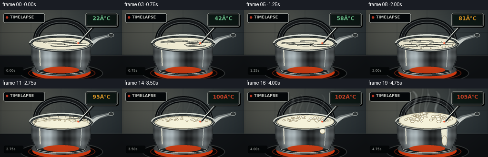
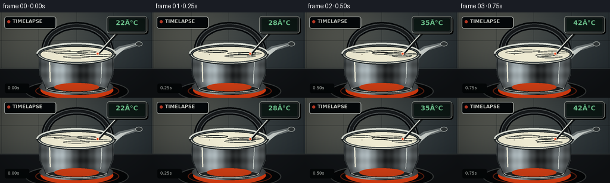

CODING AGENTS AS PIXEL WORLD MODELS
traex/GPT-5.6-Sol · phygen_107
点击播放 · 原生 RGB 像素
此结果可播放，但该运行尚未通过最终提交审核。页面展示不代表评测通过。
逐轮保存的候选
回放视频、检查图与代码变化。
每份候选均可单独播放。实际图片检查记录在下方工具轨迹中。
候选 01播放与检查图
点击播放 · 原生 RGB 像素


展开代码变化
--- 上一保存版本
+++ 本次保存版本
@@ -0,0 +1,196 @@
+from pathlib import Path
+import math, random
+import numpy as np
+from PIL import Image, ImageDraw, ImageFont, ImageFilter
+import artifact_io
+
+# PixelWorld procedural video: supersampled for clean, cinematic edges.
+W,H,N,S = 256,144,20,3
+SZ=(W*S,H*S)
+ROOT=Path(__file__).resolve().parent
+FONT='/usr/share/fonts/truetype/dejavu/DejaVuSans.ttf'
+FONT_B='/usr/share/fonts/truetype/dejavu/DejaVuSans-Bold.ttf'
+def font(n,b=False): return ImageFont.truetype(FONT_B if b else FONT,n*S)
+def scbox(b): return tuple(int(v*S) for v in b)
+def pts(a): return [(int(x*S),int(y*S)) for x,y in a]
+def rgba(c): return tuple(c)
+def bezier(p0,p1,p2,p3,n=30):
+ out=[]
+ for u in np.linspace(0,1,n):
+ q=1-u
+ out.append((S*(q**3*p0[0]+3*q*q*u*p1[0]+3*q*u*u*p2[0]+u**3*p3[0]),
+ S*(q**3*p0[1]+3*q*q*u*p1[1]+3*q*u*u*p2[1]+u**3*p3[1])))
+ return out
+
+def background():
+ im=Image.new('RGB',SZ); a=np.zeros((H*S,W*S,3),np.uint8)
+ yy,xx=np.mgrid[:H*S,:W*S]
+ # cool tiled kitchen wall, warm light from upper left
+ base=np.zeros_like(a,dtype=float)
+ base[...,0]=35+18*(1-yy/(H*S))+12*(1-xx/(W*S))
+ base[...,1]=43+19*(1-yy/(H*S))+10*(1-xx/(W*S))
+ base[...,2]=48+18*(1-yy/(H*S))+6*(1-xx/(W*S))
+ glow=np.exp(-((xx-42*S)**2+(yy-16*S)**2)/(2*(78*S)**2))
+ base += glow[...,None]*np.array([30,25,17])
+ a[:]=np.clip(base,0,255).astype(np.uint8)
+ im=Image.fromarray(a)
+ d=ImageDraw.Draw(im,'RGBA')
+ # backsplash grout and tile highlights
+ for x in [2,65,128,191,254]: d.line((x*S,0,x*S,94*S),fill=(8,12,15,65),width=S)
+ for y in [47,94]: d.line((0,y*S,W*S,y*S),fill=(8,12,15,65),width=S)
+ for x in [3,66,129,192]: d.line((x*S,1,x*S,93*S),fill=(110,124,128,18),width=1*S)
+ # counter / hob
+ d.rectangle(scbox((0,95,256,144)),fill=(18,21,24,255))
+ d.line(scbox((0,95,256,95)),fill=(99,106,104,130),width=S)
+ d.ellipse(scbox((42,113,216,153)),fill=(5,7,8,255),outline=(78,82,82,190),width=2*S)
+ d.ellipse(scbox((59,118,200,147)),outline=(227,73,31,110),width=2*S)
+ d.ellipse(scbox((72,121,187,145)),outline=(255,126,40,65),width=S)
+ return im
+BG=background()
+
+def draw_frame(i):
+ p=i/(N-1); phase=i*.73
+ im=BG.copy().convert('RGBA'); d=ImageDraw.Draw(im,'RGBA')
+ # rising heat glow around kettle base
+ d.ellipse(scbox((68,116,190,146)),fill=(246,68,19,int(14+24*p)))
+ # kettle handle BEHIND vessel
+ handle=bezier((77,72),(65,9),(187,3),(185,72),50)
+ d.line(handle,fill=(6,9,11,255),width=13*S,joint='curve')
+ d.line(handle,fill=(78,83,84,255),width=8*S,joint='curve')
+ d.line(handle,fill=(24,27,29,255),width=5*S,joint='curve')
+ # brushed-metal spout behind rim
+ d.polygon(pts([(177,72),(199,57),(231,50),(236,55),(204,65),(187,83)]),fill=(112,120,121,255),outline=(40,46,48,255))
+ d.polygon(pts([(184,71),(202,60),(230,53),(210,61),(188,78)]),fill=(205,211,207,145))
+ d.ellipse(scbox((227,49,239,57)),fill=(54,60,61,255),outline=(192,198,193,255),width=S)
+ # main kettle silhouette and its vertical metallic bands clipped to mask
+ kmask=Image.new('L',SZ,0); md=ImageDraw.Draw(kmask)
+ md.polygon(pts([(65,66),(191,66),(190,105),(179,130),(77,130),(66,105)]),fill=255)
+ md.ellipse(scbox((66,112,190,139)),fill=255)
+ metal=np.zeros((H*S,W*S,4),np.uint8)
+ xx=np.arange(W*S)[None,:]/S
+ yy=np.arange(H*S)[:,None]/S
+ val=73 + 115*np.exp(-((xx-101)/19)**2)+48*np.exp(-((xx-170)/11)**2)-35*np.exp(-((xx-137)/16)**2)
+ val=np.tile(val,(H*S,1)) + 9*np.sin(yy*.34)+5*np.sin(xx*.55)
+ metal[...,0]=np.clip(val*.92,25,220); metal[...,1]=np.clip(val*.98,28,225); metal[...,2]=np.clip(val,32,230); metal[...,3]=255
+ layer=Image.fromarray(metal,'RGBA'); im.alpha_composite(Image.composite(layer,Image.new('RGBA',SZ),kmask))
+ d=ImageDraw.Draw(im,'RGBA')
+ # body contours, highlights and base
+ d.line(pts([(67,78),(67,105),(77,129),(179,129),(189,104),(189,77)]),fill=(23,29,31,220),width=S)
+ d.line(pts([(83,83),(84,117)]),fill=(248,246,226,105),width=2*S)
+ d.line(pts([(171,82),(169,120)]),fill=(232,239,233,85),width=S)
+ d.ellipse(scbox((77,122,179,137)),fill=(34,39,40,230),outline=(141,147,144,180),width=S)
+ d.arc(scbox((78,119,179,135)),0,180,fill=(239,239,226,125),width=S)
+ # front warm burner reflection
+ d.ellipse(scbox((91,119,166,133)),fill=(218,66,22,int(9+14*p)))
+ # dark opening then chrome rim
+ d.ellipse(scbox((61,51,195,88)),fill=(18,24,25,255),outline=(218,222,213,255),width=3*S)
+ d.ellipse(scbox((65,55,191,85)),outline=(75,82,82,255),width=2*S)
+ # milk surface, evolves from smooth ivory to active rippled cream
+ milk=Image.new('RGBA',SZ,(0,0,0,0)); m=ImageDraw.Draw(milk,'RGBA')
+ surface=(68,58,188,83)
+ m.ellipse(scbox(surface),fill=(239,235,211,255))
+ # broad slow ripples after warming
+ activity=max(0,(p-.25)/.75)
+ for k in range(5):
+ cx=128+math.sin(phase*.8+k*1.7)*35
+ cy=70+math.cos(phase+k)*5
+ rx=22+7*math.sin(k+phase); ry=2.1+activity*1.7
+ col=(255,253,231,int(22+65*activity)) if k%2==0 else (138,130,109,int(15+42*activity))
+ m.ellipse(scbox((cx-rx,cy-ry,cx+rx,cy+ry)),outline=col,width=max(S,int((.5+activity)*S)))
+ # bubble populations; deterministic positions, smoothly expanding before popping
+ count=int(2+activity*42)
+ rng=random.Random(3517)
+ for k in range(count):
+ ang=rng.random()*math.tau
+ radial=math.sqrt(rng.random())
+ cx=128+math.cos(ang)*radial*54
+ cy=70+math.sin(ang)*radial*9.5
+ life=(p*2.8+rng.random()+k*.071)%1
+ rad=(.55+2.2*life)*(0.4+activity)
+ if p<.42 and k>5: continue
+ m.ellipse(scbox((cx-rad,cy-rad*.56,cx+rad,cy+rad*.56)),fill=(251,248,222,180),outline=(150,140,113,160),width=S)
+ m.ellipse(scbox((cx-rad*.48,cy-rad*.30,cx+rad*.12,cy+rad*.02)),fill=(255,255,244,155))
+ # perimeter microbubbles appear first
+ edge=max(0,(p-.27)/.3)
+ for k in range(int(edge*25)):
+ ang=math.pi*2*k/25 + .12*math.sin(phase+k)
+ cx=128+56*math.cos(ang); cy=70+10.5*math.sin(ang)
+ r=1.1+.45*math.sin(k*2.2+phase)
+ m.ellipse(scbox((cx-r,cy-r,cx+r,cy+r)),fill=(255,253,232,230),outline=(165,151,120,180),width=S)
+ im.alpha_composite(milk)
+ d=ImageDraw.Draw(im,'RGBA')
+ # frothy mound during rolling boil, expanding above the opening
+ foam=max(0,(p-.57)/.43)
+ if foam>0:
+ # central cream body lifts and spreads
+ top=65-foam*15
+ d.ellipse(scbox((72-foam*3,top,187+foam*3,84)),fill=(246,243,219,245),outline=(181,171,139,180),width=S)
+ rng=random.Random(991)
+ n=int(18+foam*42)
+ for k in range(n):
+ x=78+rng.random()*101
+ profile=1-((x-128)/59)**2
+ y=69-rng.random()*max(2,foam*17*profile)+math.sin(k+phase)*.7
+ r=(1.2+rng.random()*3.4)*(0.55+foam*.55)
+ col=(255,253,232,rng.randint(205,250))
+ d.ellipse(scbox((x-r,y-r*.65,x+r,y+r*.65)),fill=col,outline=(165,153,121,145),width=S)
+ d.ellipse(scbox((x-r*.48,y-r*.37,x+r*.05,y-r*.03)),fill=(255,255,249,170))
+ # final boil-over tongue at front-right, physically attached to foam
+ spill=max(0,(p-.84)/.16)
+ if spill>0:
+ d.polygon(pts([(151,72),(170,72),(169,86+spill*19),(164,94+spill*24),(159,87+spill*17),(157,77)]),fill=(244,241,218,245))
+ d.ellipse(scbox((159,84+spill*15,170,95+spill*25)),fill=(250,247,226,240),outline=(179,164,130,130),width=S)
+ # redraw rim highlights in front of milk
+ d.arc(scbox((61,51,195,88)),0,180,fill=(239,241,231,245),width=2*S)
+ d.arc(scbox((61,51,195,88)),8,172,fill=(105,112,112,255),width=S)
+ d.arc(scbox((61,51,195,88)),0,-180,fill=(38,44,45,255),width=3*S)
+ d.arc(scbox((64,54,192,86)),4,176,fill=(251,250,234,175),width=S)
+ # steam on translucent blurred layer; denser and taller as temperature rises
+ steam_amt=max(0,(p-.32)/.68)
+ if steam_amt>0:
+ st=Image.new('RGBA',SZ,(0,0,0,0)); sd=ImageDraw.Draw(st,'RGBA')
+ strands=int(2+steam_amt*8)
+ for k in range(strands):
+ bx=83+(k*16.7)%91 + 4*math.sin(k*1.4+phase)
+ rise=15+steam_amt*(28+(k%3)*5)
+ y0=61-foam*8
+ drift=7*math.sin(phase*.7+k*2)
+ path=bezier((bx,y0),(bx-11+drift,y0-rise*.28),(bx+13-drift,y0-rise*.67),(bx+drift,y0-rise),32)
+ sd.line(path,fill=(236,244,241,int(25+steam_amt*72)),width=max(S,int((1.2+steam_amt*1.7)*S)))
+ st=st.filter(ImageFilter.GaussianBlur(1.5*S))
+ im.alpha_composite(st)
+ d=ImageDraw.Draw(im,'RGBA')
+ # thermometer probe and compact digital display, clearly showing >100 C at end
+ d.line(pts([(203,29),(165,70)]),fill=(18,21,22,230),width=4*S)
+ d.line(pts([(201,28),(164,69)]),fill=(214,218,210,255),width=2*S)
+ d.ellipse(scbox((161.5,67,166.5,72)),fill=(235,80,42,255),outline=(255,220,193,220),width=S)
+ # display drop shadow and case
+ d.rounded_rectangle(scbox((181,8,249,37)),radius=5*S,fill=(0,0,0,100))
+ d.rounded_rectangle(scbox((179,6,247,35)),radius=5*S,fill=(36,42,42,255),outline=(160,166,158,255),width=S)
+ d.rounded_rectangle(scbox((183,10,243,31)),radius=2*S,fill=(15,28,24,255))
+ temps=[22,28,35,42,50,58,66,74,81,87,92,95,97,99,100,101,102,103,104,105]
+ temp=temps[i]
+ color=(245,78,46,255) if temp>=100 else ((255,176,45,255) if temp>=80 else (126,226,164,255))
+ tx=f'{temp}°C'
+ bb=d.textbbox((0,0),tx,font=font(11,True)); tw=bb[2]-bb[0]
+ d.text(((213*S-tw/2),11*S),tx,font=font(11,True),fill=color,stroke_width=0)
+ # small tasteful timelapse UI label
+ d.rounded_rectangle(scbox((7,7,94,27)),radius=4*S,fill=(5,9,11,150),outline=(210,216,211,70),width=S)
+ # recording dot and title
+ d.ellipse(scbox((12,13,17,18)),fill=(244,75,48,255))
+ d.text((21*S,10*S),'TIMELAPSE',font=font(8,True),fill=(236,239,232,235))
+ # frame time lower-left
+ stamp=f'{i/4:04.2f}s'
+ d.rounded_rectangle(scbox((8,120,49,136)),radius=3*S,fill=(5,8,9,145))
+ d.text((13*S,123*S),stamp,font=font(7),fill=(224,230,225,220))
+ # subtle vignette
+ arr=np.asarray(im.convert('RGB')).astype(np.float32)
+ yy,xx=np.mgrid[:H*S,:W*S]; nx=(xx-W*S/2)/(W*S/2); ny=(yy-H*S/2)/(H*S/2)
+ vig=np.clip(1-.19*(nx*nx+ny*ny),.73,1)[...,None]
+ arr=np.clip(arr*vig,0,255).astype(np.uint8)
+ out=Image.fromarray(arr).resize((W,H),Image.Resampling.LANCZOS)
+ return np.asarray(out,dtype=np.uint8)
+
+frames=np.stack([draw_frame(i) for i in range(N)])
+artifact_io.save(frames,ROOT)
+print('saved',frames.shape,frames.dtype)
可观测工具轨迹
实际执行的命令与返回图片。
命令 1exit 0
/bin/bash -lc "cat prompt.txt && printf '\\n---RULES---\\n' && cat GENERATION_RULES.md && printf '\\n---SPEC---\\n' && cat task_spec.json"
命令 2exit 0
/bin/bash -lc "find . -maxdepth 2 -type f -printf '%p %s bytes\\n' | sort"
命令 3exit 0
/bin/bash -lc "which ffmpeg || true; which blender || true; python3 - <<'PY' mods=['numpy','cv2','PIL','scipy','imageio','moviepy'] for m in mods: try: x=__import__(m); print(m,'OK',getattr(x,'__version__','')) except Exception as e: print(m,'NO',e) PY"
命令 4exit 0
/bin/bash -lc 'cat artifact_io.py'
保存候选 1 份；完成命令 4 次；可验证图片返回 0 张。原始 API 响应与完整日志保留在本地。